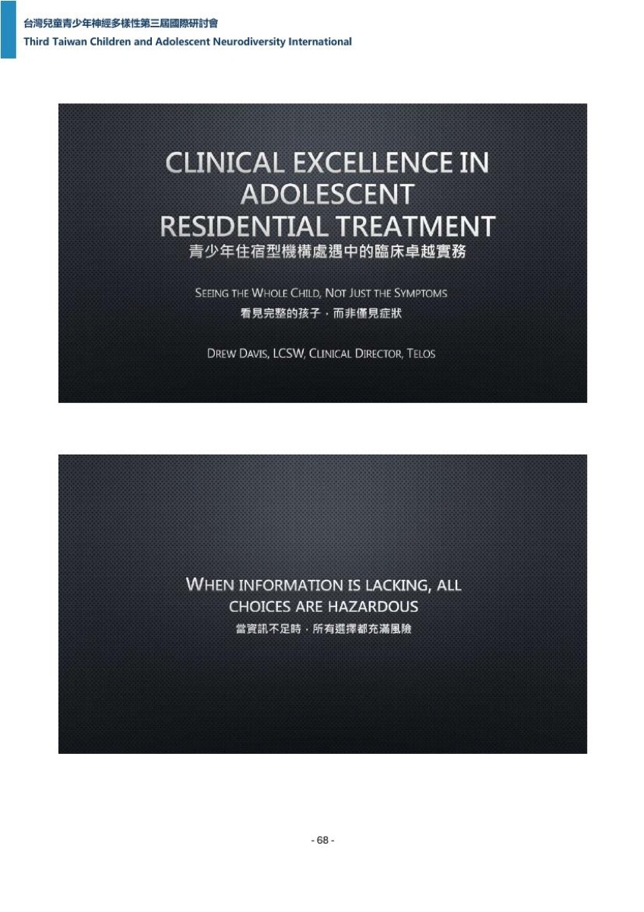
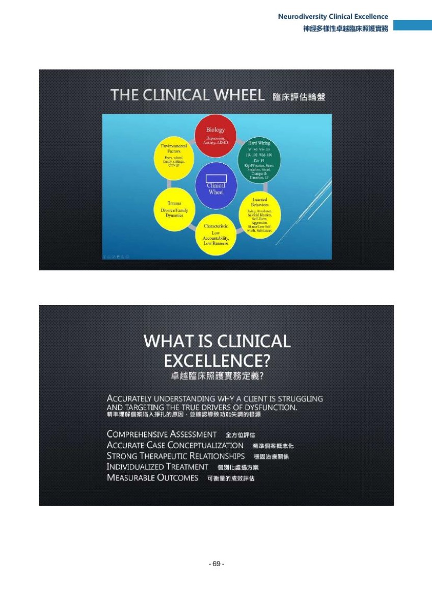
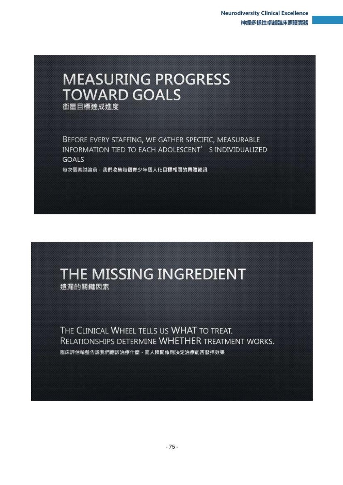
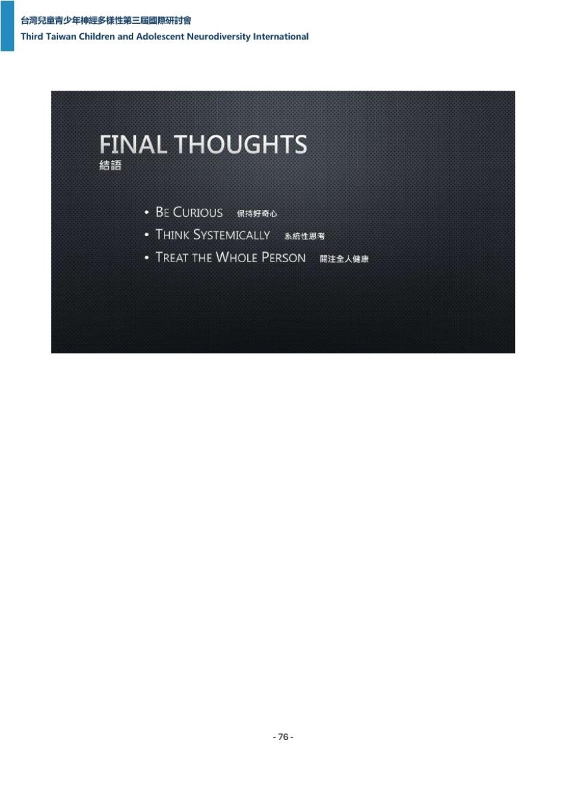

專題演講 · Session｜第 4 場
Neurodiversity Clinical Excellence
神經多樣性卓越臨床照護實務
答案不在知識或技術，而在理解，且理解早於治療；並援引投影片箴言：資訊不足時所有選擇都充滿風險。
頁面內常見標記：推論／推定＝整理者依現有資料的推測，不是講者原話；（口譯）＝現場口譯員的中文，不是講者本人的話；【校正】＝聽打明顯聽錯之處，整理者改用正確字，保留原始聽寫可查。
要點
每條：主張（轉述，不加引號）／依據／中文逐字稿交叉（含歸屬等級，判準見〇-2、〇-3）／單點時戳（講者時戳，見〇-4、〇-4-1）。 條號後括號為 v1 對應條，供追溯。
- 1｜[00:02:04]（
p-069.jpg）
- 主張：講者（依英文逐字稿）把臨床人員的第一責任放在理解，而不是直接提供治療；並以一個問題為整場定調——成為一名卓越的臨床專業人員，真正的意涵是什麼。
- 依據：英文逐字稿 特定片段 將責任分兩層（不只是提供治療，第一責任是理解）；特定片段 為該定調提問，英文逐字稿聽寫作 clinically tested、語意不通。開場另有年資自述（特定片段），但年數兩份逐字稿衝突，本條不採（五節 #1）。
- 中文逐字稿交叉：（英文逐字稿＋口譯對照）——第一責任句的口譯在 –
:49（[00:02:52]，晚 48 秒）「那身為一個臨床的專業人員」「我認為我們的責任不僅是提供治療」「我們的首要責任是去理解」；定調提問的口譯在 –:53（[00:03:05]，晚 50 秒）「就是要成為一名卓越的臨床專業人員」「真正的意涵是甚麼」——這正面解決了 v1 待確認 #2：原詞是 excellent，英文逐字稿的 tested 為聽寫誤植（八節 #2 已結案）。同窗的 （[00:02:00]）為 ZH 遍機器中譯（doublet），不計入佐證。
- 2｜[00:04:32]（
p-069.jpg）〔v1 要點 3；時戳回復〕
- 主張：講者（依英文逐字稿）以一句多年影響其臨床思考的箴言收束前段：資訊不足時，所有選擇都充滿風險。
- 依據：英文逐字稿 特定片段；與
p-069.jpg下半投影片印刷逐字「When information is lacking, all choices are hazardous／當資訊不足時，所有選擇都充滿風險」相符（實際核對圖檔核對，手冊整理檔同字）。
- 3｜[00:05:59]（無對應投影片）〔v1 要點 4〕
- 主張：評估被定位為持續進行的好奇歷程，不是入院時完成一次的程序（英文逐字稿聽寫）。
- 依據：英文逐字稿 特定片段–42 列舉每次治療會談、每次家庭會議、每次與工作人員的對話都在補全臨床圖像。
- 中文逐字稿交叉：（英文逐字稿＋口譯對照，–
:99，[00:06:41]，晚 41 秒）「那我會常提醒我們的這個」「臨床團隊」「螢幕不是隻有」「克蘭剛進案提示的這個表格而已」「它是一段動態的」「它是持續的」。同窗的 （[00:06:00]）為機器中譯，其前一格 正是「論論論論」重複迴圈指紋（doublet），不計入佐證。
- 4｜[00:07:42]（
p-070.jpg）〔v1 要點 5〕
- 主張：臨床評估輪盤被定位為協助臨床人員在評估與治療計畫時組織思考的實務框架，不取代既有心理學理論或實證處遇（英文逐字稿聽寫）。
- 依據：英文逐字稿 特定片段–47 明言不取代既有心理學理論或實證處遇。
- 中文逐字稿交叉：（英文逐字稿＋中文逐字稿同窗英文字串）——（[00:07:42]）保留英語原句，與 特定片段 共同子字串 105 字元。時戳自 00:07:21 校正為 00:07:42：特定片段 橫跨 00:07:21–00:07:51（30.0 秒），而 –
:111（07:05–07:42）確為真口譯（行文通順，如「那我們理解就越完整」「建立一下這樣的技術架構」），講者這句自 [00:07:42] 起。詞形：中文逐字稿作 clinical framework、英文逐字稿作 clinical rule，兩者都不是投影片印刷字（八節 #1 已定案採 clinical wheel）。
- 5｜[00:08:59]（
p-070.jpg）〔v1 要點 6〕
- 主張：每位青少年都同時受六個構面影響，臨床問題不是某構面是否存在，而是它對當前表現貢獻多少比重（英文逐字稿聽寫）。
- 依據：英文逐字稿 特定片段；
p-070.jpg上半輪盤圖畫出六個節點（Biology／Hard Wiring／Learned Behaviors／Characteristic／Trauma／Environmental Factors，實際核對圖檔核對）。 - 中文逐字稿交叉：（英文逐字稿＋中文逐字稿同窗英文字串）——–
:130（[00:09:01]–[00:09:09]）三段保留英語原句，共同子字串 65 字元；口譯在 （[00:09:15]，晚 16 秒）。本條首句為金句 Q1。
- 6｜[00:10:29]（無對應投影片）〔v1 要點 7〕
- 主張：講者（依英文逐字稿）說這個框架的價值之一是讓人保持謙遜——第一個解釋不一定是正確的解釋——並以一個偵探的比喻自況。
- 依據：英文逐字稿 特定片段–67，自 encourages humility 推到 We call this being a humble detective。本段落在 9 個 en 格之一（00:10:30 en p=0.989）。
- 7｜[00:12:31]（
p-070.jpg）〔v1 要點 8〕
- 主張：臨床卓越較少取決於我們知道什麼、較多取決於我們怎麼想，其內涵是準確理解青少年為何受困並針對真正的失能驅動因子（英文逐字稿聽寫）。
- 依據：英文逐字稿 特定片段–84 的對比句與 targeting the true drivers；
p-070.jpg下半印刷逐字為 Accurately understanding why a client is struggling and targeting the true drivers of dysfunction（實際核對圖檔核對）。 - 中文逐字稿交叉：（英文逐字稿＋口譯對照，[00:12:38]，合併段起點 +7s／去偽影後真起點約 +16s，由 EN 特定片段 [00:12:47] 界定，見〇-2-1）「臨床卓越人員,大家可能會想到這個人有豐富的資歷啊,有專業證照等等,那這些不然很重要,但是我相信臨床卓越的定義其實比較是取決於我們如何去思考,而不是我們知道什麼。」該段為 26 秒連續通順敘述，判為人類口譯——反向鐵證：EN 遍 特定片段–89（[00:12:47]–[00:13:15]）正是把這段口譯中文機器英譯的產物，可據以界定口譯起講時間。同窗無機器中譯。
- 8｜[00:17:24]（
p-070.jpg）〔v1 要點 9〕
- 主張：講者（依英文逐字稿）把五項特徵串成一條序列——全方位評估導向準確理解，準確理解導向個別化處遇，穩固關係讓處遇得以發生，可測量成效讓實務持續改進。
- 依據：英文逐字稿 特定片段 敘述此序列，特定片段 先說這些臨床人員共有五項特徵；
p-070.jpg下半列出同五項（全方位評估／精準個案概念化／穩固治療關係／個別化處遇方案／可衡量的成效評估）。 - 中文逐字稿交叉：（英文逐字稿＋口譯對照，–
:203，[00:17:47]，晚 23 秒）「大家可以看一下同一篇。全方位的評估會帶來很精準的理解。」「很精準的理解就會催化出個別化的治療,身後的關係會促進改變發生。」「我們是沒有辦法強迫個案改變,可是我們如果跟他們的關係很好,它是可以發揮正向影響,那可衡量的成效會繼續引領我們繼續緊進,所以這五個歷程其實是緩緩相扣的,那也就構成了我們工作的基礎。」——逐環對應。v1 引 –:198是錯的，那是前一段 特定片段–114 的口譯。同窗的 （[00:17:32]）為機器中譯。此兩段把講者起講時間夾在 17:24，與英文逐字稿起點一致，v1 待確認 #12 因此結案。
- 9｜[00:18:22]（
p-071.jpg；本條依據涵蓋 [00:18:22]–[00:21:03]，錨點取首句）〔v1 要點 10＋11 合併〕
- 主張：症狀很少自己解釋自己——同樣符合憂鬱診斷的青少年，背後可能分別是未處理的創傷、ADHD 與反覆學業挫敗、家庭衝突、潛在情感疾患或深度社交孤立；講者（依英文逐字稿）因此把提問從這個人有什麼診斷，換成什麼因素組合最能解釋這位青少年目前的功能水準。
- 依據：英文逐字稿 特定片段–124 列出五種驅動因子；特定片段–136（[00:20:51]）以 stopped asking／started asking 的句構陳述提問轉換。
p-071.jpg上半有兩條，本條與兩條都同向：第 1 條「Two teenagers can have the same diagnosis but require completely different treatment」正是本條主張的投影片版本，第 2 條「Depression may be driven by trauma, ADHD, learning disorders, family conflict, or biology」與逐字稿清單交集三項、各有二項不同（八節 #4）；下半逐字「Move beyond 'What diagnosis?' to 'What explains this behavior?'」為同向的投影片版本。 - 中文逐字稿交叉：（英文逐字稿＋口譯對照）——症狀段口譯在 –
:214（[00:18:47]，晚 25 秒）「其實症狀本身很少能自己去解釋他的成員」起，依序出現創傷未解決、ADHD 與學業挫折、長期家庭衝突、社交孤立；提問轉換段口譯在 –:237（[00:20:47]）「在我的職業生涯中,我的最大轉變發生在於,我不再只去問這個性上面他是有什麼病」—— 為 30 秒合併段（20:47–21:17）、起點早於 特定片段 約 4 秒，屬合併段起點偏移，非真的早於講者。
- 10｜[00:24:51]（
p-072.jpg；本條依據涵蓋 [00:24:51]–[00:28:41]，錨點取首句）〔v1 要點 12＋13 合併：構面一、二〕
- 主張：第一個構面生物學指大致不在意識選擇範圍內的部分——遺傳易感性、腦部化學、身體健康、荷爾蒙與藥物反應，其中睡眠被特別檢視，改善睡眠有時能在任何心理治療技術導入之前就帶來有意義的臨床改善；第二個構面天生神經結構則讓講者（依英文逐字稿）改變了看待青少年的方式——許多年輕人多年相信自己懶惰、叛逆或沒有動機，實情可能只是被要求在不符合其大腦處理方式的環境中成功。
- 依據：英文逐字稿 特定片段–171（生物學範圍）、特定片段–179（睡眠，落在 en 格 00:26:00）、特定片段–188（[00:28:04] 標籤翻轉）、特定片段（把提問換成什麼樣的支持能讓你成功）。
p-072.jpg上半印刷逐字「Genetics, sleep, medication response, medical conditions, neurochemistry」；下半列 ADHD、執行功能、學習障礙、自閉特質、IQ、工作記憶、處理速度。 - 中文逐字稿交叉：（英文逐字稿＋口譯對照）——生物學清單口譯在 –
:274（[00:25:43]，晚 52 秒）「還有對藥物的生理反應等等」「所以我會問說哪些生理因素是在加劇這位青少年的脆弱性和防腦性」；天生神經結構口譯在 –:304（[00:28:36]，晚 32 秒）「徹底改變了我看待青少年的方式」「他們多年來會以為自己是一個很懶惰」——該段落在 –:311的重播迴圈區內（同一段口譯近乎逐句重複兩份逐字稿），迴圈本身不影響歸屬判定（〇-2：迴圈是解碼偽影、兩種中文都會出現）。睡眠段的同窗中文 –:282（[00:26:06]）句法僵硬、屬 ZH 遍機器中譯·同源不互證，不計入佐證。v1 稱本段既無英語原句也無口譯中文過寬，且 v1 所述 的止點有誤——實際空白區間是 24:46–25:13。
- 11｜[00:30:53]（
p-073.jpg；本條依據涵蓋 [00:30:53]–[00:32:32]，錨點取首句）〔v1 要點 14＋15 合併：構面三〕
- 主張：第三個構面後天習得行為的前提是每個行為都在解決某個問題——逃避降低焦慮、憤怒製造距離、完美主義試圖預防失敗、物質使用暫時減輕情緒痛苦；處理方式是先問這個行為滿足了什麼需求，再協助青少年發展能滿足同一需求的健康技能，Telos 把這套作法稱為 erase and replace（英文逐字稿聽寫）。
- 依據：英文逐字稿 特定片段–207 列出行為與其功能並說明其由適應轉為無效；特定片段（[00:32:10] 先立問法）、特定片段（[00:32:24] 點名該技術）。
p-073.jpg上半印刷逐字「Every behavior solves a problem. Ask: What purpose does this behavior serve?」。該技術名稱未見於本場投影片，屬口述新增資訊。 - 中文逐字稿交叉：（英文逐字稿＋中文逐字稿同窗英文字串）——（[00:31:19]）「anger creates distance」、
:344（完美主義）、:347（物質使用）、:350（科技過度使用與睡眠不足）、:353（These behaviors often begin as adaptive attempts to solve difficult problems.，共同子字串 76 字元）五段保留英語原句；:359（[00:32:24]）保留 erase and replace 整句。口譯對照在 –:363（[00:32:58]，晚 34 秒）「內在的需求,為什麼會出現這個行為」「那要看清這一點的話,我們才能陪伴孩子建立一個更健康、更正向的技能去取代那些原來不好的行為」。冠詞未定，v2 的【校正】改字已撤回（四節）。本條相關金句 Q4 不列可引金句、不對外引用；本條只把該技術名稱當內容使用，不作逐字引語。
- 12｜[00:34:43]〔v1 要點 16＋17 合併：構面五、六〕
- 主張：創傷構面的紀律是雙向的——創傷既不該被忽略，也不該被當成每一個臨床表現的唯一解釋，良好的評估要把創傷與其他構面並列而非取代；最後一個構面是環境——沒有青少年在真空中發展，家庭、同儕、學校、社區、社群媒體與文化都在影響其發展，有時臨床端很努力改變青少年，環境卻持續增強我們想減少的那些行為。
- 依據：英文逐字稿 特定片段（創傷定義）、特定片段–230（雙向紀律）、特定片段（[00:35:17] The final domain is the environment 並列舉環境因子）、特定片段–235（三個必問：什麼在幫忙、什麼在維持問題、什麼必須改變）。
p-074.jpg上半印刷逐字「Trauma changes beliefs, relationships, identity, and nervous system functioning」；下半「Family, school, peer, and cultural influences shape functioning」。 - 中文逐字稿交叉：（英文逐字稿＋口譯對照）——創傷核心句的口譯在 （[00:34:43]，為 30 秒合併段；合併段起點 +0s 是偽影——講者在 [00:34:43]–[00:34:58] 仍在說英語，口譯真起點約 +15s，見〇-2-1）「但是我這邊也要提醒,就是我們不能忽視創傷的存在,但是也不能把創傷當作解釋所有臨床問題的藉口,就是一個卓越的臨床評估呢,是讓我們可以把創傷和其他領域的存在。」——逐點對應，v1 改引其後殘句 屬捨強取弱。環境句的口譯在 –
:382（[00:35:34]，晚 17 秒）。另 –:373（[00:34:04]）保留創傷定義的英語原句（共同子字串 47 字元）。時戳採英文逐字稿，不採口譯的 00:35:34（〇-4-1）。
- 13｜[00:40:56]（
p-075.jpg下半；本條依據涵蓋 [00:40:56]–[00:42:17]，錨點取首句）
- 主張：每位青少年每兩週由完整治療團隊做一次個案討論，明言不是入院一次、出院一次，而是只要人還在照顧中就持續進行；團隊成員包含主責治療師、直接照護人員代表、休閒治療師、學術團隊，通常也包含家庭；會中一起重走臨床輪六個構面，逐一問生理、天生神經結構、行為、環境各有什麼改變，以及對這位青少年的理解自上次會面以來是否移動了（英文逐字稿聽寫）。
- 依據：英文逐字稿 特定片段（[00:40:56] 每兩週、否定入院一次與出院一次）、特定片段–266（[00:41:02]–[00:41:15] 團隊組成）、特定片段–277（[00:42:01]–[00:42:17] 重走六構面與自問）。
p-075.jpg下半印刷逐字為「Every adolescent is staffed by the full treatment team every two weeks — reviewing all six domains of the Clinical Wheel together」。本頁是本場投影片區段唯一被手冊整理標為有數字者。 - 中文逐字稿交叉：（英文逐字稿＋口譯對照，–
:425，[00:41:15]，晚 19 秒）「那就是為什麼在我們TILOS的這個計劃裡面」「就是每一個青少年的每兩週都會有一個完整的治療團隊」「那它並不是只有在入住機構的時候發生」「我們的團隊會包含了主要的治療人員」「就是直接給予教護的人員」「還有我們的學術團隊」「還有家庭治療師」；重走六構面的口譯在 –:432（[00:42:15]，晚 14 秒）「我們這些工作人員會一起梳理六個臨床輪的六大面向」「我們會去評估生理上有什麼改變了」「自從我們上次見面到現在又有哪些問題」。團隊組成這一塊在 v1 全檔任何一節都沒有出現。射程限縮：口譯只覆蓋主責治療師、直接照護人員、學術團隊、家庭治療師四類；主張中的休閒治療師（rec therapists）在口譯裡完全沒有，且 特定片段 的 the family 與口譯的「家庭治療師」不是同一回事——這兩項只有英文逐字稿聽寫，口譯未覆蓋，不在本條口譯對照的射程內。
- 14｜[00:47:49]（
p-076.jpg）
- 主張：目標本身的寫法決定它能不能被測量——像改善情緒或在學校表現更好這類模糊目標無法測量、也無法引導處遇；作法是把每個目標寫到臨床輪的特定構面上，並寫成可實際觀察的形式，講者舉了三個實例：降低情緒失調發作的頻率、提高學業作業的完成度、增加青少年在家庭會談中願意敞開而非封閉的次數（英文逐字稿聽寫）。
- 依據：英文逐字稿 特定片段（[00:47:34] 模糊目標無法測量）、特定片段（[00:47:41] 寫到特定構面並寫成可觀察形式）、特定片段–324（[00:47:49]–[00:48:00] 三個實例逐字）。
p-076.jpg上半印刷逐字「Before every staffing, we gather specific, measurable information tied to each adolescent's individualized goals／每次個案討論前，我們收集每個青少年個人化目標相關的具體資訊」（實際核對圖檔核對）。 - 中文逐字稿交叉：（英文逐字稿＋口譯對照，–
:517，[00:48:29]，晚 40 秒）「比如說,我們要減少情緒失調的頻率」「或是說我們要增加課業作業完成度」「或是說我們要增加孩子在和家庭成員互動的時候」「可以有更多的時間,而不是把他們自己關閉起來」「這樣才是有效的資訊」——前二例逐一對應；第三例不對應：特定片段 作 Increase the number of family sessions（次數），口譯 –:516作「可以有更多的時間」（時間），次數與時間不是同一件事，該例的口譯對照不成立，僅存英文逐字稿聽寫。本條是七節行動意涵 #4 所需的具體內容，v1 只在方法學節一句帶過。
- 15｜[00:49:01]（
p-076.jpg）〔v1 要點 18〕
- 主張：講題以還有最後一個要素讓上述一切成為可能收束——再準確的評估，若青少年不信任臨床人員，價值都有限；理解決定我們治療什麼，關係決定治療能否發生（英文逐字稿聽寫）。
- 依據：英文逐字稿 特定片段（最後一個要素）、特定片段（不信任則評估價值有限）、特定片段–337（「Our understanding tells us what to treat.」「Our relationship determines whether treatment can occur.」）。
p-076.jpg下半印刷逐字為「The Clinical Wheel tells us WHAT to treat. Relationships determine WHETHER treatment works」（實際核對圖檔核對）。
投影片

手冊第 68 頁

手冊第 69 頁

手冊第 70 頁
手冊第 71 頁

手冊第 72 頁
手冊第 73 頁

手冊第 74 頁

手冊第 75 頁

手冊第 76 頁
金句
- 「Every adolescent is influenced by all six domains」 [00:09:01]（音訊認證 ✓）
- 「It reminds us that our first explanation is not always the correct explanation.」 [00:10:19]（音訊認證 ✓）
- 「We should probably be questioning whether or not every assessment we have done is sufficient.」 [00:16:05]（音訊認證 ✓）
- 「Even the most accurate assessment has limited value if the adolescent does not trust the clinician.」 [00:48:49]（音訊認證 ✓）
- 「erase and replace technique（見下）」（逐字稿照抄，未經音訊認證）
- 「A therapist may believe treatment is progressing well.」 [00:43:58]（逐字稿照抄，未經音訊認證）
- 「Our understanding tells us what to treat.」（逐字稿照抄，未經音訊認證）
Q&A
- 本檔區間內無現場提問環節。 檔 3 由講者講題與逐步口譯全程佔滿至 00:50:15；檔 4 的 S04 段（00:00:00–00:01:01）為口譯收尾與致謝，其後 [00:01:08] 起即主持人開場 P1。
- 反查指令與實跑結果（2026-09-12，v2 重跑，完整輸出見查核紀錄 L）：
三行逐一判讀：（00:00:11–00:00:23）是開場宣布提問單機制（If you have any questions in the hearing process, you can also share the questions you have），屬 P1 綜合討論的提問來源，不是本場現場 Q&A；:152 命中 question from，是口譯中文被機器英譯的破碎句；:225 命中 hands? 分支中的 hand，實為 on the other hand，屬正則誤命中。結論成立：本場無現場 Q&A。 v1 在此處誤寫成「未出現」（0 命中），與實跑相反，v2 已改正。
- 本場有一次中斷重述。英文逐字稿有兩次道歉：特定片段（[00:49:33]–[00:49:36]）Sorry, can you repeat this again?，與 特定片段（[00:49:45]）Sorry.；中文逐字稿只有一次：（[00:49:44]–[00:49:45]）sorry，與 特定片段 同步。故兩份逐字稿在 [00:49:45] 這次道歉上是一致的；分歧只剩 [00:49:33] 一處——該時窗英文逐字稿作道歉、中文逐字稿 作 research across，兩份逐字稿對同一段音訊的內容互斥，其中一個是解碼幻覺。發言者身分無法判定（whisper 無語者分離），本節不做方向性研判，見八節 #6。
- 本場結束後緊接的綜合討論（P1，11:35-12:00）記錄另見。
整理者註記
| # | 事項 | 時戳／位置 | 現況 |
|---|---|---|---|
| 4 | 要點 9 的五種憂鬱驅動因子清單與投影片不一致 | [00:18:22] | 逐字稿列：未處理的創傷／ADHD 與反覆學業挫敗／家庭衝突／潛在情感疾患／深度社交孤立；p-071.jpg 上半列：trauma／ADHD／learning disorders／family conflict／biology。交集三項、各有二項不同。以逐字稿為準並標註差異，不合併成一份清單。 |
| 9 | 講題總時長與議程時段的落差 | — | 議程 S04 為 10:45-11:35（50 分鐘），檔 3 全長 50:15 加檔 4 前 1:01 ≈ 51:16，與議程相符；但檔 3 是否自 10:45 整點起錄、休息後是否有主持人開場未被錄到，未查證。 |
對國教盟（國教行動聯盟）的意涵
每條前提都是本記錄有時戳的要點。全部標推論：，未經理事長裁決前不對外引用。
- 推論：要點 5、12 提供可直接引用的結構化論據：六構面的問題是占多少比重而非有沒有，且環境被列為與生物學平行的構面。這支持本盟長期主張的多元評估、勿以單一標籤結案，並把環境調整從家長訴求提升為臨床框架內建的一環。前提：要點 5 [00:08:59]、要點 12（環境構面部分，[00:35:17]，該要點錨點為 [00:34:43]、涵蓋 [00:34:04]–[00:36:09]）。
- 推論：要點 10 的標籤翻轉（許多年輕人多年相信自己懶惰，實情是環境不匹配其大腦處理方式）是校園場域最可直接轉譯的一句，可用於教師增能與家長溝通素材，把不努力的歸因改寫成支持不足。前提：要點 10（天生神經結構部分，[00:28:04]，該要點錨點為 [00:24:51]、涵蓋 [00:24:51]–[00:28:41]）。
- 推論：要點 12 的雙向紀律（創傷既不該被忽略、也不該當成唯一解釋）對本盟有雙面校準價值：既支持校園創傷知情的推動，也提醒我們在個案論述中避免把創傷當成萬用解釋。前提：要點 12 [00:34:43]。
- 推論：要點 13 與 14 合起來是一個可對標的制度規格：每兩週一次全團隊個案討論、團隊組成明確（主責治療師／直接照護人員／休閒治療師／學術團隊／家庭）、會中重走六構面、會前收集與個人化目標綁定的可測資訊，並有三個可觀察目標的寫法實例。另有第三塊在投影片層而未進要點：
p-075.jpg上半 Clinical Excellence in Action 列出的整合處遇服務組合——精神醫療、學校支持系統、EMDR 創傷治療、家庭治療、執行功能生活陪跑、以關係為核心的治療（手冊整理:59）。會議頻率＋團隊組成＋服務組合三者合起來才是完整的制度規格。若本盟要對特教或學生輔導體系提出個案會議頻率與參與角色的具體建議，這是有出處的國際實務參照點——但必須先查證台灣現行法定頻率與人力條件，本輪未查；且服務組合那一頁本記錄未在要點層覆蓋（八節 #7、查核 Q），引用前須先補。前提：要點 13 [00:40:56]、要點 14 [00:47:49]。 - 推論：要點 2 的箴言可作為本盟主張資料公開先於處置的修辭資產：同一句話同時適用於臨床評估與政策決策。該句未通過雙遍同串閘、亦未送音訊認證，使用前只能轉述或引投影片印刷字，不得當作講者引語。前提：要點 2 [00:04:32]。
依 2026-09-12 現場錄音逐字稿整理（約 50 分鐘）；本場金句 4/5 經音訊認證。 看完整逐字稿 →